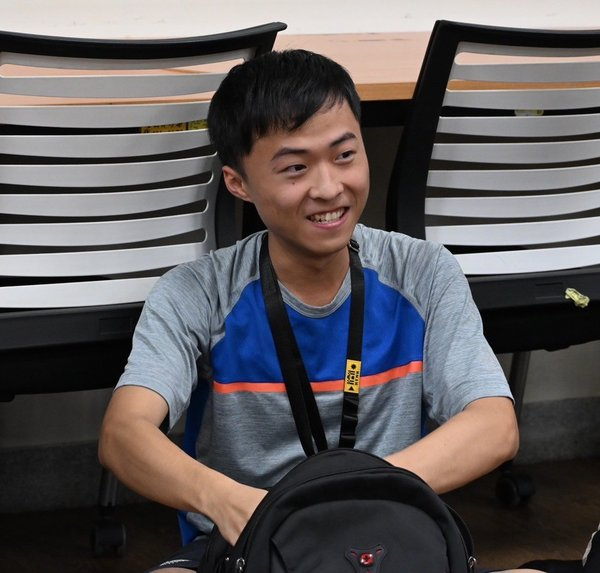

ACADEMIC BACKGROUND
國立臺灣師範大學
主修｜電機工程學系
我相信教學是透過人與人之間的互動，
去讓學生更加認識自己。
以好奇心探索世界，以理解與陪伴回應每一段學習旅程。

每一次提問，都是理解的開始。
以數學為起點，持續探索知識與人的關係。
我是劉俊明。我相信數學不只是計算與公式，也是一種認識世界、整理思考，並重新理解自己的方式。學習的價值，除了找到答案，也在於與他人互動、交流想法的過程中，逐漸理解自己與世界的連結。
在工程專業之外，也關注教育現場與偏鄉孩子的學習機會。
主修｜電機工程學系
學分學程｜PASSION 偏鄉優質教育
在課業輔導、家教與遠距陪伴中，累積與不同孩子對話的教學實踐。
陪伴學生釐清基礎概念，建立穩固的數學推演與解題習慣。
針對升學大考進行系統化統整，引導學生梳理解題脈絡與應試策略。
透過線上遠距教學與陪伴，跨越地理限制支持學童的學習與探索。
依循學生個別思考節奏，提供客製化的學科引導與學習支持。
依不同學習階段與需求，陪伴學生建立理解、思考與解題能力。
一份鼓勵，也是一份持續投入與前進的提醒。
獲選為 111 學年度臺中市中等學校優秀青年。
讓教育成為支持孩子探索與成長的力量。
願有一天，生活在臺灣的每一個願意努力的孩子，都可以好好地被老師接住，得到自由發展的機會。
記錄學習、生活、服務與一路走來的故事。
歡迎透過電子郵件交流想法與聯繫。